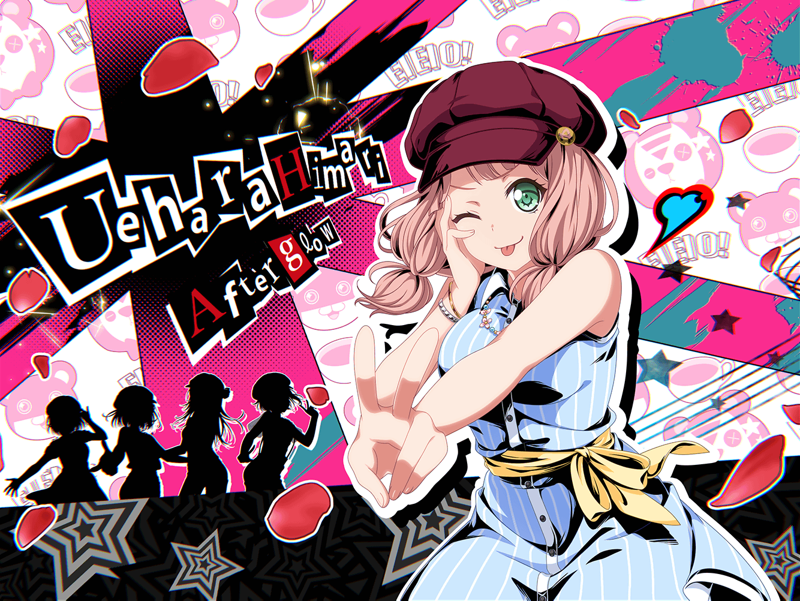

放課後
羽丘女子学園 1-B教室
ひまり
今日は練習もないし、
どっか出かけよっかな～。
SNSでいいお店ないか探してみよーっと
つぐみ
ひまりちゃん、一緒に帰ろー！
今日早めに帰らないと雨降るって――
ひまり
えーっ！？
この近くに来てるのっ！？
つぐみ
ひ、ひまりちゃん！？
どうしたの？
ひまり
あ、つぐ！
今すぐ駅行こ！
めっちゃ有名な占い師さんが駅に来てるんだって！
つぐみ
へえ、そうなんだ！
ふふっ、ひまりちゃん占いとか好きだもんね！
ひまり
その人、タロットカード占いがすごいらしくって！
占ってもらった人の未来をばしばし当てちゃうんだって～！
つぐみ
へえ！
そんなにすごい人なら、私も気になってきたかも！
ひまり
でしょっ！？
早く行こーっ！

駅前
ひまり
ついた！
……けど、雨降ってきちゃったね。
私、傘持ってきてないよ～
つぐみ
あはは、大丈夫！
折り畳み傘持ってきたんだ。
一緒に入ろう？
ひまり
つ、つぐ神様～！
ひまり
でも占い師さんどこにいるんだろう……？
この辺りにいた、って書いてあったんだけど……
つぐみ
うーん、もしかしたら雨が降ってきたから、
他の場所に移動したんじゃない？
ひまり
そうかも！
ちょっと調べてみるね！
ひまり
あー……
その人、雨が降ってると早めに帰っちゃうんだって……残念……
つぐみ
そっかあ、残念だけど、
またの機会にしよっか――
？？？
もし、そこのお嬢さん達……
占い師をお探しかね……？
つぐみ・ひまり
うわぁっ！
つぐみ
ひ、ひまりちゃん！
この人がひまりちゃんの言ってた……？
ひまり
ううん、若い女の人だって書いてあったから、
違う人だと思う……
占い師
占い師をお探しなら、
どれ、あたしが占ってあげようかね……
つぐみ
ど、どうしようひまりちゃん！？
ひまり
どうしよう……って、
つぐ、占ってもらわないの！？
つぐみ
だ、だってちょっと怖くない……？
なんていうか本物っぽいっていうか……
ひまり
本物ならなおさら占ってもらおうよ～！
……決めた！ 私は占ってもらうね！
ひまり
そ、それじゃあお願いしますっ！
占い師
どれどれ……ふむ、ふむ……ひいぃっ！
ひまり
ど、どうしたんですかっ！？
占い師
こ、この手相は……
ひまり
この手相は……？
占い師
今日のあなたは驚くほどの幸運に満ちています……
占い師を始めて数十年、こんな幸運の持ち主に
出会えるとは……ありがたや、ありがたや……
ひまり
拝まれちゃった！
……っていうか、幸運なんて初めて言われたかも！
おばあちゃん、もっと詳しく占ってください！
占い師
い、いえ……あたしなんかが貴女の未来を
占うことなんてできません……それでは……
ひまり
い、行っちゃった……
つぐみ
何だったんだろうね……
ひまり
でも、すごい幸運に満ちた日だって！
何があるんだろー！
つぐみ
ふふっ、楽しみだね！
……あ、もうこんな時間！？
ひまりちゃん、また明日ねっ！
ひまり
うんっ！
ばいばーい！
翌日
羽丘女子学園 1-B教室
ひまり
つぐ～～～！！！
聞いてよ～～～っ！！！！
つぐみ
おはよう、ひまりちゃん！
どうかしたの？
ひまり
昨日大変だったんだよ～！
つぐみ
え、た、大変って……？
ひまり
つぐと別れてから、
近くに雷は落ちるし、犬に噛まれそうになるし、
挙句の果てには車にひかれそうになったり！
つぐみ
え、ええー……
すっごくいいことがあるって言われてたのに！？
ひまり
ホントだよねっ！
むしろその逆だよー……
もう全然あてにならなかった！
ひまり
まあ全部結局何ともなかったから、
いいんだけど……
つぐみ
それならよかった……あ！
ひまりちゃん……それってもしかしたら、
すっごい幸運で、不幸を全部阻止したんじゃない？
ひまり
そ、そうかも……！
えー、でもそれならもっとわかりやすい幸運のほうが
よかったよ～～～！！！